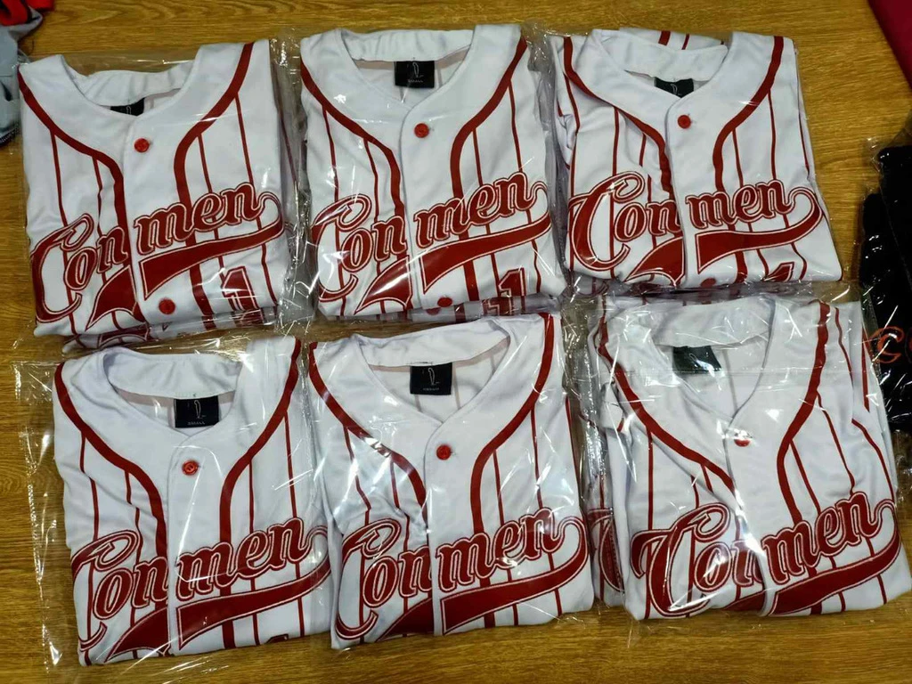
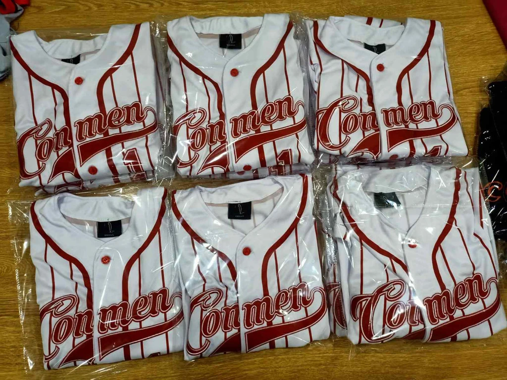
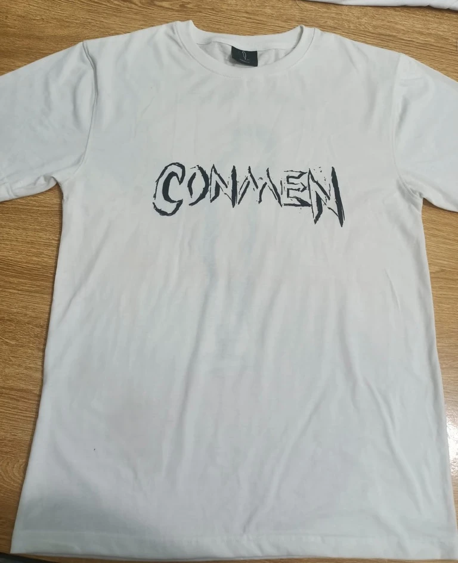
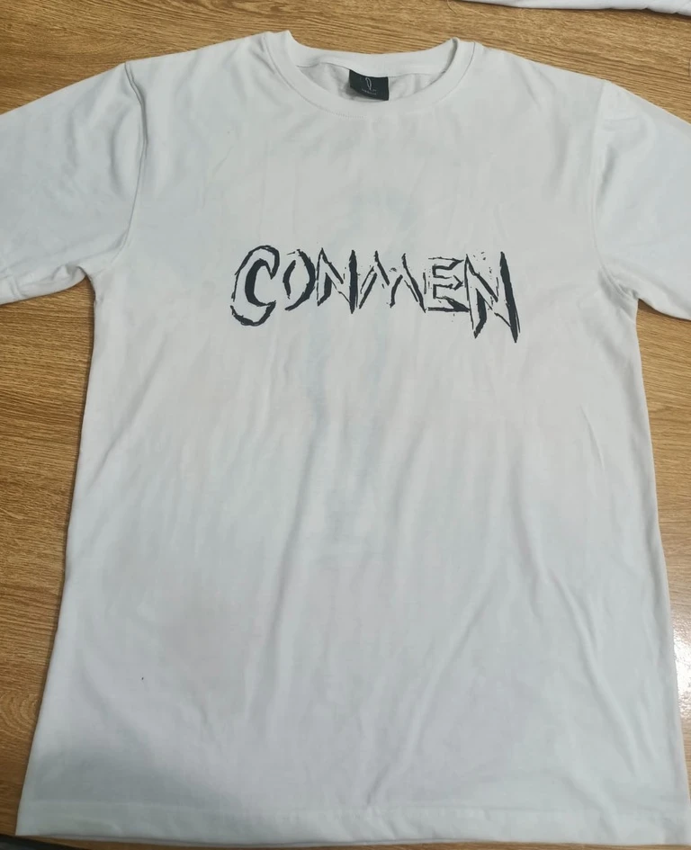

first try: learning new skills of design & fashion


Near the end of my edgy teenage years (late 2020), I started my first clothing brand. The brand was called CONMEN and represented breaking free from the status quo. Being yourself even if it meant shocking the world. This was the real start of my design career.


expanding horizons and taking on challenges
This was some of my very first uses of Adobe Illustrator and Inkscape. I fully taught myself how to use the programs. I created my first pieces of clothing and slowly got better and better. I also taught myself how to make tech-packs, a complex and compact file sent and filled with information on how the manufacturer can make your design come to life. With practice, I taught myself how to communicate these ideas to manufacturers. This was not just designs, but also a business. I learned the value of marketing, budgeting and became so much more business-savvy through this clothing brand. Everyday of practice with CONMEN made me a stronger businessman and designer.
the birth of my love for design
With more and more practice I made lots more designs come to life. They got more complex, wacky and bold with each new idea I got. If I could think of it, I would create it. I ordered prototypes and sold stock to customers. This brand was the start of my entrepreneurial mindset. I started to profit and make money off my designs. This was my first real design breakthrough, I felt on top of the world knowing the world and its creation is all at my fingertips. Check gallery below for more of my designs coming to life.
gallery
My first clothing piece design was a jersey called Babe Ruth-Less. Read more about it Here.
gallery
Initial designing process and photos of production from manufacturer.

 
gallery
Jersey design coming to life. Photoshoots and images for marketing were made.
gallery
My second design was a simple T-shirt. This was me looking for a "staple piece". Read more Here.

gallery
Measurements and prototyping was made. First photo from manufacturer was sent.

 
gallery
Photos and new colourways were made. Marketed and sold!

gallery
The more I designed, the better I got and the hunger to design grew exponentially.


gallery
More complex and quality designs were created and shaped me as a designer. Learn more Here.


gallery
A collage of a winter drop photoshoot showcasing a Winter Jacket, Cargo Pants and Tracksuits.